配置远程仓库¶
参考文档 - github多帐号配置SSH key
注册github账号¶
登录 github官网
如果你已经有账号，那么点击右上角的 sign in 直接登录
如果没有账号，依次输入昵称、邮箱、密码，然后点击 Sign up for GitHub 进行注册，按照默认的设置完成注册，最后还要进行邮件确认,我们登录到自己的注册邮箱中，会有一个github发来的邮件，点击即可
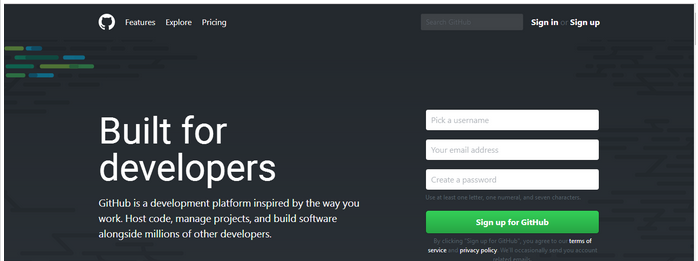
建立远程仓库¶
使用刚刚注册的github账号登录，点击 Start a project ，在 Repository name 下输入仓库名，其他的保持默认即可，然后点击 Create repository ，到这里，你在github上的的一个仓库就已经建立成功
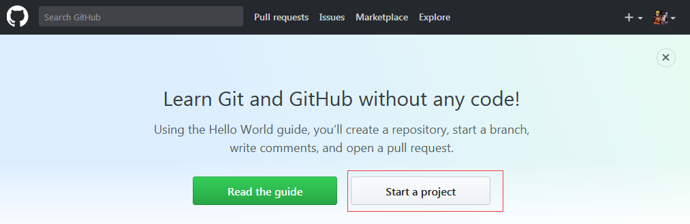
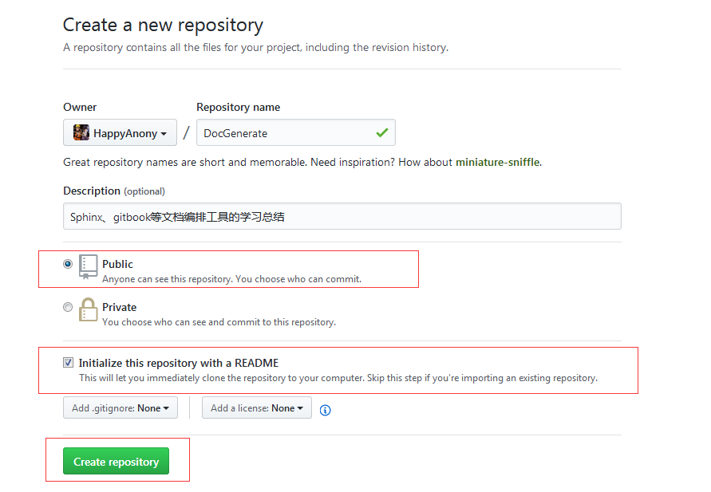
配置git用户名和邮箱¶
使用以下命令将申请的github账号用户名、邮箱和git进行绑定
git config --global user.name "Your_User_Name"git config --global user.email "Your_Email"
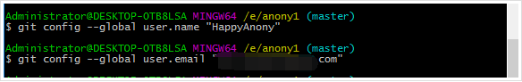
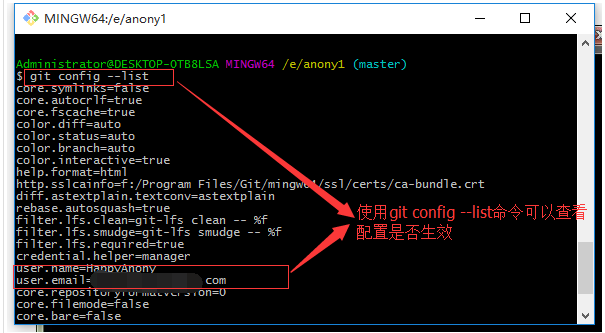
配置SSH Key¶
git和github连接的方式有两种
- http连接：默认情况下，当我们
git push将本地仓库同步到远程仓库时，git将采用http方式来连接github，但是此时需要输入用户名和密码验证git提交的合法性，这样会很不方便 - ssh连接：使用
ssh-keygen工具生成一对密钥，私钥保存本地，公钥配置到github仓库，git push将本地仓库同步到远程仓库时，无需输入用户名和密码，通过私钥公钥验证即可验证合法性
关于ssh相关命令行工具的使用可参考`ssh详解 <>`_
这里我们将选择ssh方式连接github仓库，此时就需要配置SSH Key；此处可以参考Github官方文档配置SSH Key
配置SSH Key的一般思路是
- 使用
ssh-keygen工具生成一对秘钥(公钥和私钥)，默认存放在用户家目录的.ssh目录下 - 将生成的
.pub公钥文件打开，将文件内容添加到github仓库中 - 使用
ssh -T工具验证配置是否生效
在实际应用中，我们可以将仓库配置类型分类两大类
- 单用户多仓库配置
- 多用户单仓库配置
如果我们一个用户只使用自己的一个github仓库，那就好办，只需要生成一对密钥即可；但是实际应用中，我们要么是维护自己账户的多个仓库，要么是需要多个用户维护同一个仓库，此时就需要管理多对密钥。那么该如何管理呢?
- 生成密钥：
ssh-keygen工具生成密钥是默认是将私钥保存到id_rsa文件中，将公钥保存到id_rsa.pub文件中；所以在生成其它github仓库或者其它github用户密钥时，指定其它文件名，不要使用默认值，否则前一个密钥会被后一个密钥覆盖 - 密钥添加：将生成的私钥使用
ssh-agent工具添加到ssh agent引擎中，因为ssh只能识别使用ssh agent引擎中的私钥，默认只添加了文件名为id_rsa的私钥 - 配置config文件：config文件用来配置指定仓库的相关信息，是由多个Host字段组成，以供
git push将本地仓库同步到远程仓库时遍历使用，config文件Host字段格式如下：
# DocGenerate仓库（15377649725@163.com）配置======注释信息
Host DocGenerate =================================定义Host字段别名，在配置remote url时用来替换github.com
HostName github.com=======================指定托管平台域名
PreferredAuthentications publickey========指定仓库认证方式为公钥认证
IdentityFile ~/.ssh/id_rsa_docgenerate====指定私钥文件路径
ssh秘钥验证逻辑是
- 查找
.ssh目录下是否存在config文件，如果存在执行第2步；如果不存在则执行第3步 - 从上到下依次遍历读取
config文件内容，找到当前git remote -v命令配置的仓库对应的Host字段，在该字段中找到对应的私钥文件，判断该私钥文件是否在ssh-agent中，如果在执行第4步，否则报错 - 判断当前目录是否存储
id_rsa文件，如果存在执行第4步，否则报错 - 判断当前读取的私钥文件是否和github仓库的公钥匹配上，如果匹配，则验证通过；否则验证失败
单用户多仓库配置¶
- 使用
ssh-keygen -t rsa -C "Github的注册邮箱地址"命令生成DocGenerate仓库对应的密钥对，指定生成路径
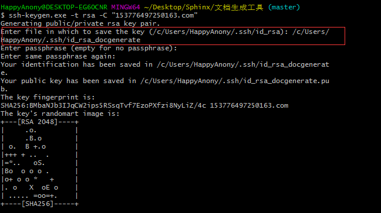
- 使用
ssh-keygen -t rsa -C "Github的注册邮箱地址"命令生成GnuToolchain仓库对应的密钥对，指定生成路径
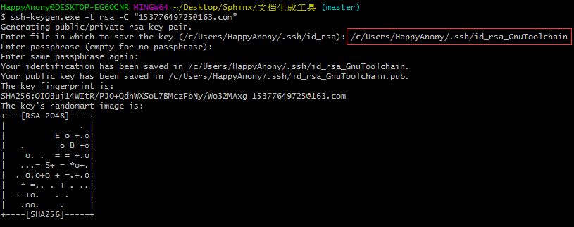
- 使用
ssh-add Path_To_Private_Key命令将刚生成的各个私钥文件添加到ssh agent引擎中
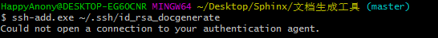
- 如果出现
Could not open a connection to your authentication agent的错误，就执行ssh-agent bash命令；然后再执行上述命令
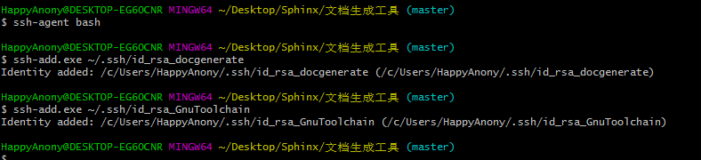
- 在
~/.ssh目录下找到config文件，如果没有就使用touch config命令创建该文件，编辑如下
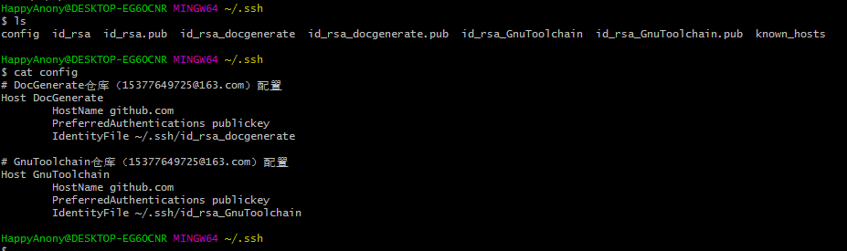
- 进入
.ssh文件夹，使用文本编辑器(sublime/notepad++)打开id_rsa_docgenerate.pub文件和id_rsa_GnuToolchain.pub文件，复制全部内容（即生成的公钥） - 千万不要使用Windows自带的记事本编辑任何文本文件。原因是Microsoft开发记事本的团队使用了一个非常弱智的行为来保存
UTF-8编码的文件，他们自作聪明地在每个文件开头添加了0xefbbbf（十六进制）的字符
- 千万不要使用Windows自带的记事本编辑任何文本文件。原因是Microsoft开发记事本的团队使用了一个非常弱智的行为来保存
- 进入
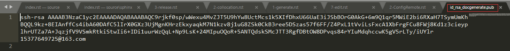
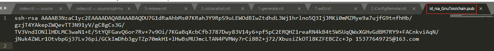
- 登录github账号，然后在页面右下角的
Your repositories目录下，打开创建的仓库，点击右上角的settings，左边选中Deploy keys，右边点击Add deploy key，Title可随便填写，Key粘贴上面复制的key（即.pub文件的全部内容），然后点击Add key
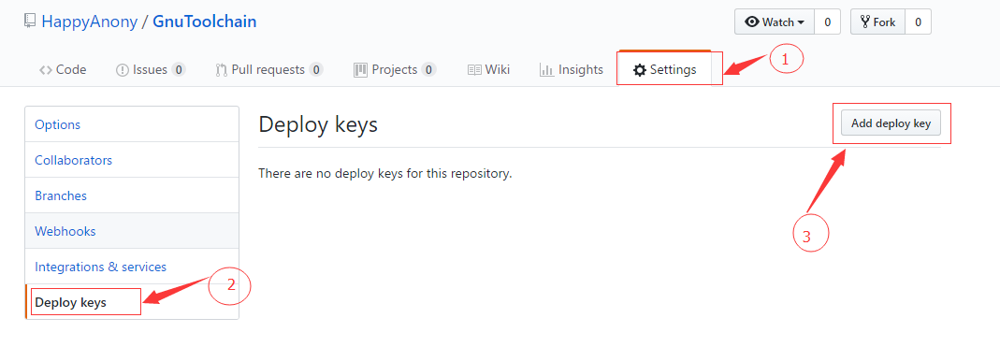
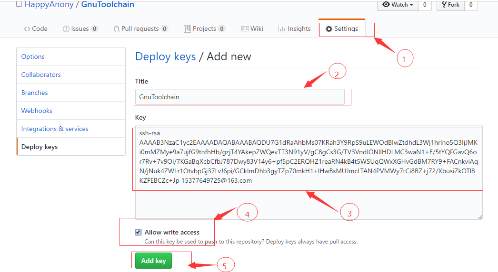
- 之后注册邮箱会收到一封github官网发来的验证邮件，打开邮件链接进行确认即可
- 使用
ssh -T git@DocGenerate命令和ssh -T git@GnuToolchain命令验证配置是否成功
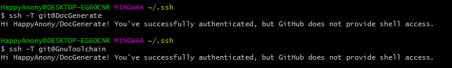
- 如果是第一次，会提示是否
continue，输入yes就会看到：You’ve successfully username, but GitHub does not provide shell access（username会显示为你的账号名称）这就表示已成功连上github